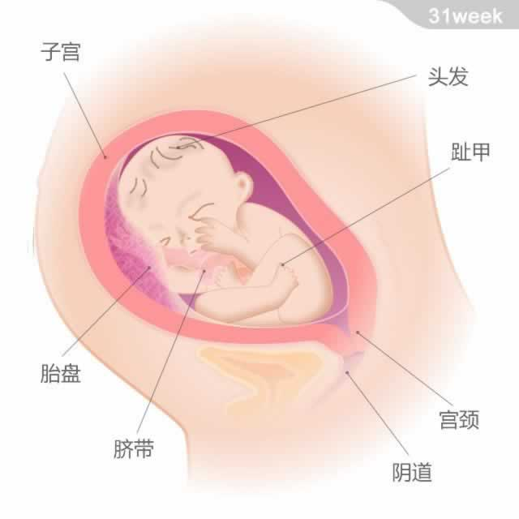

宝宝的重量约为1.8千克，从头部到臀部的长度约为29厘米。
宝宝的重量约为1.8千克，从头部到臀部的长度约为29厘米。
现在，宝宝每天有90%以上的时间都处于睡眠状态。他的手指甲和脚趾甲都已经长全，头发也变得更加浓密。视觉、听觉、嗅觉、味觉和触觉等5种感官都已经开始工作了。宝宝的内脏器官还在进一步发育成熟。他仍然每天不断地吸入羊水以练习呼吸，促进肺的进一步发育成熟。
现在，宝宝学会了转头的动作。虽然宝宝在子宫内的活动空间越来越小，但每小时能感觉到的胎动仍然会在10次左右。医生会建议准妈妈仔细记录胎动的情况，一旦有所减少就有必要去的医院检查。